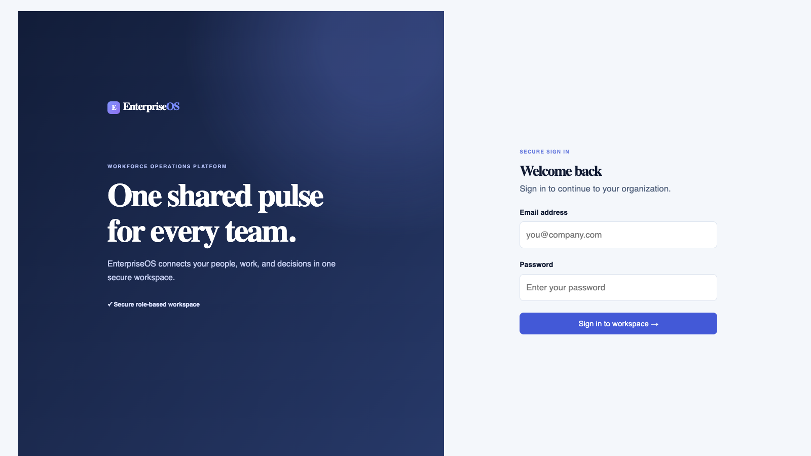
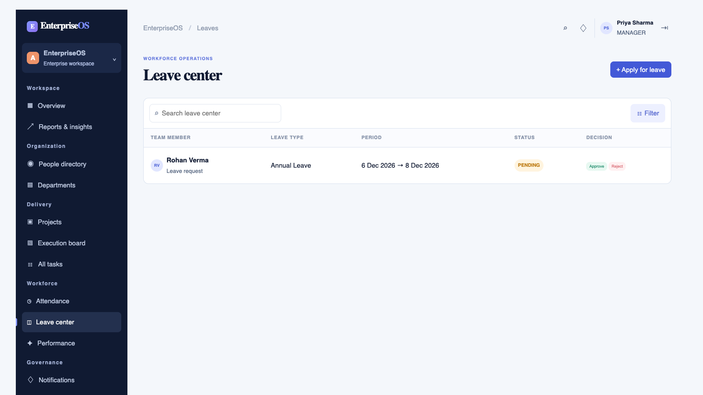
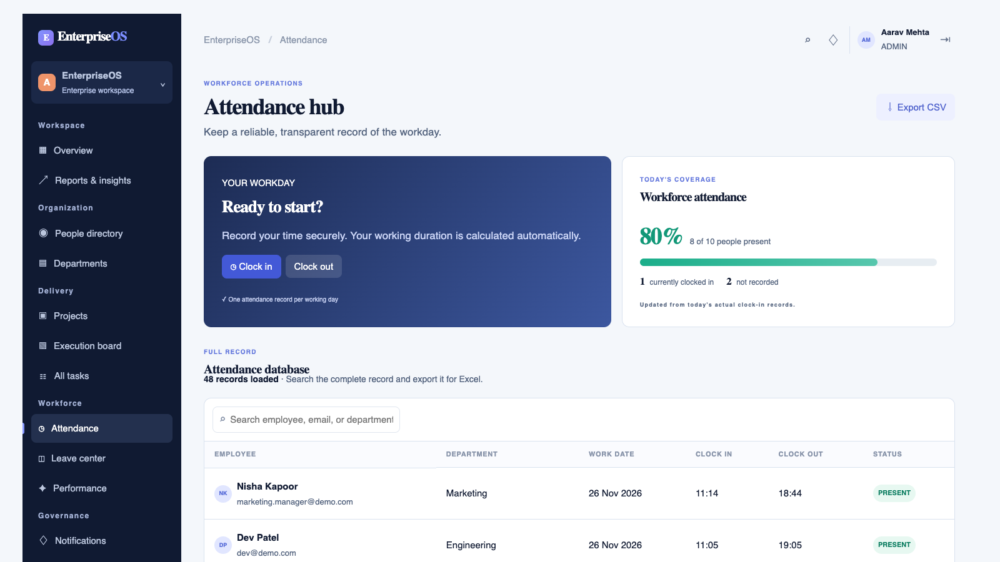
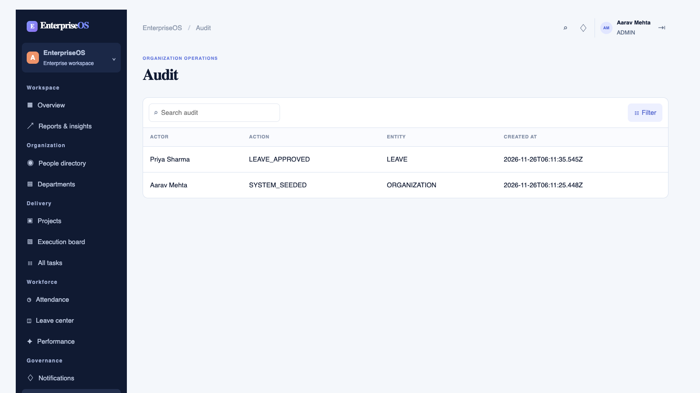

A Cost-Safe Serverless and Event-Driven Cloud Architecture for Workforce Management
B.Tech 3rd Year Computer Engineering
Thapar Institute of Engineering and Technology
Avik Khetarpal (1024031066)
Humza Ali Choudhri (1024031070)
Shashwat Tewari (1024031065)
Submitted to: Dr. Chinu Dhir
Index
S. No.
Topic
Page No.
1
Abstract
2
Introduction
2.1 Application Domain
2.2 Motivation for Selecting the Problem
2.3 Importance of Cloud Computing vs Traditional Hosting
2.4 Problem Statement
2.5 Objectives of the Project
2.6 Scope of the Project
3
Methodology
3.1 Approach
3.2 Cloud Environment Analysis
3.3 Proposed System Architecture
3.4 AWS Service Selection
3.5 Request Flow and Event-Driven Processing
3.6 Security Design
3.7 Infrastructure as Code and CI/CD
3.8 Cost Control
3.9 Tools and Technologies Used
4
Results
4.1 Website Demonstration
4.2 Testing Results
4.3 Security and Quality Checks
4.4 Performance and Cost Results
4.5 Defects Found and Fixed
4.6 Deployment Status
5
Conclusion and Future Scope
6
References
Abstract
EnterpriseOS is a multi-tenant workforce-management web application that brings employee and department records, attendance, leave approvals, projects, tasks, notifications and an audit trail into one workspace. It was originally built for our Software Engineering course as a Node.js/Express modular monolith backed by PostgreSQL and hosted on Vercel.
This project re-platforms the same application onto Amazon Web Services (AWS) to apply core cloud-computing concepts to a real system. Two constraints guided every decision: zero personal expenditure, and no change to the application's business logic. The unchanged Express application runs on AWS Lambda behind an Amazon API Gateway HTTP API, through a small, dependency-free adapter we wrote. Secrets are kept in AWS Systems Manager Parameter Store. Leave decisions and task assignments are published as events to Amazon SQS and processed asynchronously by a second Lambda function that sends notifications through Amazon SNS. Failed messages are retried and then moved to a dead-letter queue. Amazon CloudWatch provides structured logs and alarms, and the whole environment is defined in one AWS SAM / CloudFormation template that can be created or deleted with a single command.
The implementation is verified by 56 automated tests, all passing (21 original and 35 new), template, script and workflow linters with no findings, and a dependency audit with no known vulnerabilities. The new tests also exposed and fixed two pre-existing defects. A cost model estimates about US$0.01–0.03 of AWS credit per demonstration session, and the target AWS account runs on the AWS Free plan (US$120 credits, US$0 spent) with a zero-spend budget alert. The stack was deployed with a single command to the AWS Academy Cloud Developing sandbox on 26 November 2026 and verified end to end: the public HTTPS endpoint returned healthy responses, and a leave approval was processed asynchronously by the worker Lambda through SQS. This report describes the methodology, presents the results and distinguishes clearly between what is implemented, what is verified and what is deployed.
Keywords: Cloud computing, serverless, AWS Lambda, API Gateway, Amazon SQS, event-driven architecture, infrastructure as code, cost optimisation.
Introduction
2.1 Application Domain
EnterpriseOS is a digital workspace for running a company's workforce operations. It serves three kinds of users: administrators, who manage employees, departments and organisation records; managers, who plan projects, assign tasks and approve leave for their direct reports; and employees, who record attendance, apply for leave, follow their tasks and receive notifications. Every record belongs to an organisation (tenant), and the system keeps each organisation's data strictly separate.
2.2 Motivation for Selecting the Problem
In our Software Engineering course we built a working application, but it was hosted on a platform that hid most of the infrastructure from us. We wanted to understand what it really takes to run such a system in the cloud: how requests reach code, where secrets live, how slow work is moved off the request path, how failures are detected, and how the whole environment can be rebuilt reliably. Moving an existing, tested application is also more realistic than building a toy example, because real systems are rarely written from scratch for the cloud. At the same time, as students we could not risk any personal cost, which turned cost control into an engineering requirement rather than an afterthought.
2.3 Importance of Cloud Computing vs Traditional Hosting
Running EnterpriseOS on a single traditional server would work for a demonstration, but it has clear weaknesses that cloud services address:
Pay only for use: a server costs money every hour even when nobody uses it. AWS Lambda runs code only when a request arrives and scales to zero when idle.
Automatic scaling: a single server can be overloaded by many users at once. Lambda starts more copies automatically, and API Gateway throttles abusive traffic.
Reliable background work: on one server, a crash can lose pending notifications. Amazon SQS stores events durably, retries failures and keeps messages that still fail in a dead-letter queue.
Secure secrets: configuration files on a server are easy to leak. Parameter Store keeps secrets encrypted and readable only by the functions that need them.
Visibility: CloudWatch collects logs and raises alarms without installing monitoring software.
Reproducibility: a hand-configured server is hard to rebuild. With infrastructure as code, the identical environment can be created or deleted with one command.
2.4 Problem Statement
2.4.1 Addressing the Real-World Problem
Organisations need workforce systems that are always available, secure and inexpensive to run. The original EnterpriseOS met the functional needs but depended on a hosting platform that did not demonstrate how a cloud system is designed, secured, monitored and costed. The problem addressed by this project is therefore:
How can an existing web application be moved to AWS so that it demonstrates core cloud-computing concepts (serverless compute, managed messaging, secret management, identity and access management, monitoring and infrastructure as code) without changing its business logic and without any personal expenditure?
2.4.2 Constraints
Zero personal cost: no paid plan and no free-tier assumptions; any AWS credit used must be measured and capped.
Restricted environments: the AWS Academy sandbox allows only two regions, forbids creating IAM roles and deletes everything when a session ends; a new AWS account must pass verification before services can be used.
Preservation: every existing feature, role rule and test must keep working, and the original project must not be modified.
2.4.3 Solving the Problem Using Cloud Services
We keep the application unchanged and wrap it in managed, pay-per-use AWS services. Requests are served by Lambda behind API Gateway, slow side-effects are moved to an SQS-based event pipeline, secrets move to Parameter Store, and everything is described in a single template with built-in cost and security guard-rails.
2.5 Objectives of the Project
To run the existing EnterpriseOS application on AWS Lambda behind a managed HTTPS endpoint without changing its business logic.
To store all secrets outside the code, templates and logs, using AWS Systems Manager Parameter Store.
To design an event-driven pipeline (SQS, Lambda, SNS) with retries and a dead-letter queue for background processing.
To apply least-privilege IAM permissions, encryption and request throttling.
To add structured logging, a health check and CloudWatch alarms for monitoring.
To define the complete environment as code (AWS SAM / CloudFormation) with one-command deployment and verified cleanup.
To automate testing and validation with GitHub Actions, while keeping deployments manual and cost-checked.
To estimate and cap cloud cost, keeping personal expenditure at ₹0.
2.6 Scope of the Project
2.6.1 Functional Boundaries of the System
The project covers the cloud architecture, implementation, testing and documentation of EnterpriseOS on AWS. It supports:
Serving the web interface and REST API from AWS Lambda through API Gateway (or a Lambda Function URL as a fallback).
Loading the token-signing secret and optional database address from Parameter Store at start-up.
Publishing LEAVE_DECIDED and TASK_ASSIGNED events and processing them asynchronously.
Health checks, request IDs, JSON logs and alarms for errors, server failures and dead-lettered events.
Automated tests, linting, secret scanning, packaging and guarded deployment and cleanup scripts.
The project does not provision a paid managed database, a content-delivery network, a custom domain or e-mail delivery to real employees; these are documented as future scope.
2.6.2 Types of Users Involved
Administrators: manage employees, departments and audit activity.
Managers: manage projects and tasks and approve leave for their direct reports.
Employees: record attendance, apply for leave and follow assigned work.
Operators (the project team): deploy, monitor and clean up the cloud stack.
2.6.3 Modules Covered
Module
Coverage
Application (unchanged)
Authentication and roles, people and departments, attendance, leave, projects and tasks, dashboard, notifications, audit trail
Cloud runtime adapter
Lambda handler, HTTP bridge, Parameter Store loader
SAM template, IAM policies, deployment, pre-flight and cleanup scripts, GitHub Actions
Methodology
3.1 Approach
The work was carried out in a fresh, separate repository (now public on GitHub) so that the original Software Engineering project, its deployment and its database remained untouched. We followed these phases:
Baseline audit: inspected the code, ran the 21 existing tests (all passed) and the dependency audit (0 vulnerabilities).
Environment analysis: checked which AWS services, regions, permissions and budgets were actually available.
Architecture design: chose services by need and idle cost, and rejected those that bill by the hour.
Implementation: added the Lambda adapter, event pipeline, logging and health check, changing existing code as little as possible.
Infrastructure as code: wrote one parameterised SAM template, deployment scripts and CI workflows.
Verification: added 35 new tests, ran linters, a secret scan, a package smoke test and latency measurements.
Documentation: recorded decisions, costs, limitations and the exact deployment status.
3.2 Cloud Environment Analysis
Two AWS environments were examined. Findings were read directly from the AWS Academy portal and the AWS billing console rather than assumed.
Item
AWS Academy Cloud Developing Sandbox
AWS Free plan account
Credits
US$40 lab budget, US$0 used
US$120 credits, US$0 spent
Lifetime
About 3-hour sessions; all resources deleted when a session ends
182 days; no charges unless upgraded to a paid plan
IAM
Cannot create roles; must use the pre-created LabRole
Full IAM, so least-privilege roles can be created
Services
Lambda, API Gateway, SQS, SNS, CloudWatch, CloudFormation, SSM, S3 permitted; KMS not listed
Standard services, but the Free plan limits the account to one region (ap-southeast-2)
Cost guard
Self-imposed cap: min(US$3, 5% of budget) = US$2.00
Zero-spend budget alert configured
Role in project
Environment used for the verified deployment (26 Nov 2026)
Long-term target (stays live between demonstrations)
The template supports both: passing LabRole uses the sandbox's fixed role, while leaving it empty makes CloudFormation create tightly scoped roles.
3.3 Proposed System Architecture
Figure 3.1 shows the architecture. The browser reaches the API through API Gateway; the API function serves the unchanged application and publishes events; a worker function processes them asynchronously. Solid blue lines mark components that are deployed and verified on AWS; the dashed Function URL path is an implemented fallback that was not deployed; grey dotted items are future scope.
Figure 3.1: AWS architecture of EnterpriseOS (defined in infrastructure/template.yaml)
The key implementation idea is the loopback bridge. Lambda does not receive network connections; it receives JSON events. On the first request in each Lambda container, the handler starts the unchanged Express application on a private port (127.0.0.1) inside the sandbox, and then replays every API Gateway event as a real HTTP request to it. Because the real HTTP stack is used, every existing middleware (security headers, CORS rules, request-size limits, token checks, forced password change, role checks and organisation-scoped database queries) behaves exactly as it does on a developer's laptop. The bridge adds no new runtime dependency and about 1 ms per request.
3.4 AWS Service Selection
Each service was chosen for a concrete need and for low or zero cost while idle.
Service
Purpose in EnterpriseOS
Reason for choice
AWS Lambda
Runs the API/web app and the event worker
No idle cost, automatic scaling, no servers to patch
API Gateway (HTTP API)
Public HTTPS endpoint with throttling and access logs
Cheaper and simpler than a REST API; protects against abuse
Amazon SQS + DLQ
Durable buffer for domain events
Per-message retries and dead-lettering
Amazon SNS
Fan-out of notification summaries and alarm alerts
One publish reaches many subscribers
SSM Parameter Store
Encrypted storage for secrets
No extra charge for standard parameters
Amazon CloudWatch
Logs, alarms, optional dashboard
Built in; logs kept for 7 days to limit cost
AWS SAM / CloudFormation
Whole stack as code
Reproducible creation and one-command deletion
RDS, NAT gateway, load balancer, EC2
Not used
Billed every hour even when idle; a test fails if they appear
3.5 Request Flow and Event-Driven Processing
3.5.1 Request Flow
The browser sends an HTTPS request to the API Gateway address.
API Gateway applies throttling and forwards a JSON event (payload format 2.0) to the API Lambda.
On a cold start, the handler reads the allowed secrets from Parameter Store, then loads the application and starts it on the private loopback port.
The bridge replays the event as a real HTTP request, replacing any client-supplied X-Forwarded-For header with the IP address verified by AWS so that the login rate limit cannot be bypassed.
Express authenticates the token, checks the role, runs the organisation-scoped query and returns the response, which the bridge converts back into the format API Gateway expects.
3.5.2 Event-Driven Processing
Figure 3.2: Asynchronous processing of a leave decision
Original behaviour preserved: the notification and audit rows are still written immediately, exactly as before; the event is an additional step.
Never blocks the user: if publishing fails, the failure is logged and the user's request still succeeds.
Retry-safe: the worker reports only the failed messages in a batch, so only those are retried; after three failures a message moves to the dead-letter queue, which triggers an alarm.
Privacy: events contain identifiers, type and status only, never names or e-mail addresses.
3.6 Security Design
Existing controls kept: bcrypt password hashing, 8-hour signed tokens, role checks, organisation-scoped parameterised SQL, security headers and a login rate limit.
Secrets: stored only as encrypted SecureString parameters; never in code, templates, environment variables or logs (verified by a test).
Least privilege: each function's role allows only the exact actions it needs on the exact resources (no wildcards, verified by a test). In the Academy sandbox, the fixed LabRole must be used instead, which is an accepted, documented limitation.
Encryption: SQS server-side encryption and a queue policy that rejects any non-TLS request.
Abuse and cost protection: API throttling, alarms, and deletion of demonstration stacks after use.
Supply chain: dependency audit and a secret scanner run on every push.
3.7 Infrastructure as Code and CI/CD
The complete environment is defined in one AWS SAM template (infrastructure/template.yaml). Parameters select the entry point (API Gateway or Function URL), the execution role (LabRole or generated least-privilege roles), the data mode (synthetic demo data or an external PostgreSQL database), throttling limits, log retention and alarms. Scripts automate the operational steps:
preflight.sh: read-only checks of region, identity, permissions and secrets before anything is created.
put-parameters.sh: generates the signing secret locally and stores it encrypted, without ever printing it.
deploy.sh: runs the tests, builds and smoke-tests the package, shows the planned changes, asks for confirmation, deploys and checks /health.
cleanup.sh: deletes the stack and then verifies that no function, queue or log group remains.
GitHub Actions run the tests, dependency audit, package smoke test, template linter, shell-script linter and secret scan on every push. Deployment and cleanup workflows can only be started manually and require a typed confirmation, so automation can never spend credits by accident.
3.8 Cost Control
Costs were estimated from AWS's published us-east-1 prices without assuming any free allowance. Only two items cost money while the stack is idle: CloudWatch alarms and the SQS polling performed by Lambda, together about US$0.70 per month.
Scenario
Estimated cost (US$)
One demonstration session (about 3 hours), then cleanup
0.01 – 0.03
Stack left running but idle for 30 days
≈ 0.70
Worst case: traffic at the full throttle limit for 24 hours
≈ 1.80
Credits available (AWS Free plan account)
120.00
Personal expenditure
0.00
Paid always-on components such as managed databases, NAT gateways, load balancers and virtual servers were deliberately avoided. A pre-deployment checklist and the confirmation step in deploy.sh must be completed before any resource is created.
3.9 Tools and Technologies Used
Component
Technology
Reason for choice
Application
Node.js 24, Express 4
Existing EnterpriseOS code base, reused unchanged
Database
PostgreSQL (pg), pg-mem
Relational data; in-memory engine for tests and the zero-cost demo mode
Tests, vulnerability, template, script and workflow checks
Dev tools
VS Code, Git, AWS CloudShell
Development, version control and credential-free deployment
Results
4.1 Website Demonstration
The following screenshots were captured from EnterpriseOS running locally with its synthetic demonstration data. The same application code is what runs inside the AWS Lambda function.

Figure 4.1: Secure sign-in pageFigure 4.2: Manager dashboard with workforce and delivery summaryFigure 4.3: Task execution board

Figure 4.4: Leave center showing a pending request awaiting the manager's decision

Figure 4.5: Attendance records (administrator view)

Figure 4.6: Audit trail after the manager approved the leave request (this approval also publishes a LEAVE_DECIDED event)
4.2 Testing Results
The original suite of 21 tests passed before any change. After the cloud work, all 56 tests pass. The end-to-end tests send API Gateway-shaped events through the real Lambda handler and the unchanged application, in the same configuration as the cloud stack.
Test suite
Tests
Result
Original suites: authentication, tenant boundaries, administrator bootstrap, start-up, India time
Academy credit used (two sandbox sessions, estimated) / personal spend
≈ US$0.02–0.06 / ₹0
4.5 Defects Found and Fixed
The new end-to-end tests exposed two defects that already existed in the original application. In both, a manager-only database query used a correlated sub-query that the in-memory database engine could not execute, so the feature failed in local and demonstration mode.
Feature
Problem
Fix
Manager approves or rejects leave
Query referenced leave_requests.user_id inside a sub-query; returned HTTP 500
Rewritten as an equivalent user_id IN (…) condition
Manager moves a task on the board
Same pattern with tasks.project_id
Rewritten as an equivalent project_id IN (…) condition
Both fixes have identical meaning on PostgreSQL and are protected by new regression tests. Figure 4.6 shows the leave approval working after the fix.
4.6 Deployment Status
Deployed and verified on 26 November 2026 in the AWS Academy Cloud Developing sandbox (us-east-1), from AWS CloudShell with scripts/aws/deploy.sh: all 14 pre-flight checks passed, the CloudFormation stack reached CREATE_COMPLETE, /health returned HTTP 200 from outside AWS, unauthenticated API calls were refused (HTTP 401), and the security headers were present.
Figure 4.7: CloudWatch log of the worker Lambda, started by SQS after a leave approval on the live deployment (account ID removed)
Status
Components
Deployed and verified
Lambda (API and worker), API Gateway HTTP API, SQS queue and dead-letter queue, SNS topics, Parameter Store SecureString, CloudWatch logs and 4 alarms, CloudFormation/SAM stack
Found during the real deploy
Two template/script defects that only AWS could reveal (an empty SAM parameter and a two-queue SQS policy statement) were fixed, re-tested and redeployed successfully
Designed only
Managed PostgreSQL, CloudFront and WAF, GitHub OIDC deployments, X-Ray tracing
The sandbox deletes all resources when its session ends, so the identical stack is re-created in about ten minutes for each demonstration.
Conclusion and Future Scope
5.1 Conclusion
EnterpriseOS was successfully re-platformed onto a serverless, event-driven AWS architecture without changing its business logic and without any personal expenditure. The project applies the main ideas of cloud computing to a real application: pay-per-use compute with AWS Lambda, a managed HTTPS front door with API Gateway, reliable background processing with SQS, a dead-letter queue and SNS, encrypted secret storage with Parameter Store, least-privilege IAM, monitoring with CloudWatch, and a reproducible environment defined as code.
All 56 automated tests pass, the template and scripts pass their linters, the dependencies have no known vulnerabilities, and two pre-existing defects were found and fixed along the way. Cost was treated as a design requirement: the architecture avoids every hourly-billed component, and a demonstration session is estimated to cost only a few cents of credit. Throughout, we separated what is implemented, verified and deployed, so that every claim in this report is backed by evidence.
5.2 Current Limitations
In the zero-cost demonstration mode, data lives in each Lambda container's memory, so changes are not shared between containers and reset on restart.
The login rate limit is kept per container rather than globally.
In the AWS Academy sandbox, functions must use the broad LabRole.
The external PostgreSQL mode was not tested against a live database.
The AWS Academy sandbox deletes the stack after each session, so it is re-created for every demonstration.
5.3 Future Scope
Managed database: Amazon RDS or Aurora PostgreSQL with RDS Proxy inside a private network, with automated backups.
Edge delivery and protection: CloudFront for the web interface, AWS WAF and a custom domain with HTTPS certificates.
Identity: Amazon Cognito or secure cookie-based sessions with refresh tokens.
Distributed state: DynamoDB for global rate limiting and duplicate-event protection.
Real notifications: e-mail delivery through Amazon SES using employee contact details.
Observability: AWS X-Ray tracing and business metrics dashboards.
Delivery: keyless GitHub deployments using OIDC, staged environments and automatic rollback.
References
A. Khetarpal, H. A. Choudhri and S. Tewari, "Enterprise Workforce Management System (EWMS): EnterpriseOS," Software Engineering (UCS503) project report, Thapar Institute of Engineering and Technology, 2026.
Amazon Web Services, "AWS Lambda Developer Guide." https://docs.aws.amazon.com/lambda/latest/dg/
Amazon Web Services, "Amazon API Gateway Developer Guide: HTTP APIs." https://docs.aws.amazon.com/apigateway/
Amazon Web Services, "Amazon SQS Developer Guide: Dead-letter queues." https://docs.aws.amazon.com/AWSSimpleQueueService/latest/SQSDeveloperGuide/
Amazon Web Services, "AWS Systems Manager Parameter Store." https://docs.aws.amazon.com/systems-manager/latest/userguide/systems-manager-parameter-store.html
Amazon Web Services, "AWS Serverless Application Model Developer Guide." https://docs.aws.amazon.com/serverless-application-model/
Amazon Web Services, "AWS Lambda Pricing" and "Amazon API Gateway Pricing." https://aws.amazon.com/pricing/
Amazon Web Services, "AWS Free Tier." https://aws.amazon.com/free/
Amazon Web Services, "AWS Well-Architected Framework." https://docs.aws.amazon.com/wellarchitected/latest/framework/
M. Jones, J. Bradley and N. Sakimura, "JSON Web Token (JWT)," RFC 7519, IETF, 2015.